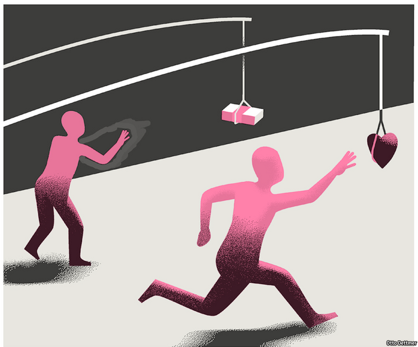

2021-04-02T14:33:23+00:00
Free exchange
自由交流
自由交流
For goodness’ sake
劝善
勸善
Why two former central bankers are talking about trust
为何两位前央行官员大谈信任
為何兩位前央行官員大談信任

AFTER THE global financial crisis, people asked whether economists had not misunderstood something important about markets. The trying experience of recent years has some figures broadening the question, to ask whether economists have not failed to grasp something crucial about people. In a new book, “Value(s)”, Mark Carney, governor of the Bank of England from 2013 to 2020, argues that within profit-obsessed market economies self-interest crowds out other motivations, making the world a more selfish place—and potentially a less resilient and prosperous one, too. The notion is disconcerting, not least because the dominance of orthodox economic thinking leaves leaders poorly equipped to assess and respond to such claims.
全球金融危机之后，人们开始质疑经济学家是否误解了市场的某些重要特质。经过了近几年的艰难时日，一些人士把这种质疑扩大到经济学家是否误解了人性的某些关键面相。在新书《价值》（Value(s)）中，曾在2013年至2020年任英国央行行长的马克·卡尼（Mark Carney）论述道，在一心逐利的市场经济中，自利排挤了其他动机，让世界变得更自私——恐怕还会损害韧性和繁荣。这种看法令人不安，尤其是正统经济学思想的支配地位使得领导者几乎无从去评估和回应这类主张。
全球金融危機之後，人們開始質疑經濟學家是否誤解了市場的某些重要特質。經過了近幾年的艱難時日，一些人士把這種質疑擴大到經濟學家是否誤解了人性的某些關鍵面相。在新書《價值》（Value(s)）中，曾在2013年至2020年任英國央行行長的馬克·卡尼（Mark Carney）論述道，在一心逐利的市場經濟中，自利排擠了其他動機，讓世界變得更自私——恐怕還會損害韌性和繁榮。這種看法令人不安，尤其是正統經濟學思想的支配地位使得領導者幾乎無從去評估和回應這類主張。
Parts of Mr Carney’s argument are echoed in another new book, by Minouche Shafik, director of the London School of Economics, who served as one of Mr Carney’s deputies at the Bank of England. Lady Shafik’s book, “What We Owe Each Other”, examines the role of the social contract and considers how changes in the global economy have undermined the function of the institutions societies rely on to keep the world a reasonably just place. Fixing up and modernising the social contract is necessary, she writes, “if we are not to witness a destructive fracturing of the mutual trust on which citizenship and society is based.” People have become too disinterested in their obligations to other people and to society as a whole, Lady Shafik says; they owe each other more.
在另一本新书中，伦敦政治经济学院院长夏菲克（Minouche Shafik）呼应了卡尼的部分观点。夏菲克曾是卡尼在英国央行任职时的副手之一。她的书名为《我们彼此负有的义务》（What We Owe Each Other），探讨了社会契约的作用，并思考全球经济的变化如何削弱了各种制度的功能，而这些制度正是让社会保持适度公正的基础。她写道，“如果我们不想目睹公民和社会所依赖的相互信任出现毁灭性的破裂”，就必须修复社会契约，并使之与时俱进。人们对自己应承担的对他人和整个社会的义务已经变得过于冷漠，夏菲克说，他们理应对彼此承担更多义务。
在另一本新書中，倫敦政治經濟學院院長夏菲克（Minouche Shafik）呼應了卡尼的部分觀點。夏菲克曾是卡尼在英國央行任職時的副手之一。她的書名為《我們彼此負有的義務》（What We Owe Each Other），探討了社會契約的作用，並思考全球經濟的變化如何削弱了各種制度的功能，而這些制度正是讓社會保持適度公正的基礎。她寫道，“如果我們不想目睹公民和社會所依賴的相互信任出現毀滅性的破裂”，就必須修復社會契約，並使之與時俱進。人們對自己應承擔的對他人和整個社會的義務已經變得過於冷漠，夏菲克說，他們理應對彼此承擔更多義務。
Such notions would not have been out of place in the work of the classical economists. Indeed, both Mr Carney and Lady Shafik cite Adam Smith’s work, “The Theory of Moral Sentiments”, which investigated how people come by their values, beliefs and preferences. They do so, Smith argued, through “mutual sympathy”—by imagining how others feel, essentially. This informs the public’s sense of right and wrong and establishes a social foundation for other institutions, including markets. Smith saw markets as “living institutions, embedded in the culture, practice, traditions and trust of their day”, writes Mr Carney. Modern economists rarely write about markets in such terms. The innovations of the neoclassical economists of the late 19th century shaped the profession into one in which utility, value and market prices are all treated as more or less the same thing. In an effort to become more rigorous or scientific, economists stripped from their analysis the difficult moral questions that interested Smith. Economics “simply doesn’t traffic in morality”, writes Mr Carney, quoting “Freakonomics”, a popular economics book.
这些观点若是放在古典经济学家的著作中并不会显得突兀。事实上，卡尼和夏菲克都引用了亚当·斯密的《道德情操论》，这本书研究了人们的价值观、信仰和偏好是如何形成的。斯密认为，它们的形成是通过“相互同情”——本质上就是去想象他人的感受。这支持起了公众的是非观念，并为市场及其他制度奠定了社会基础。斯密将市场视为“活生生的机制，根植于当时的文化、实践、传统和信任之中”，卡尼写道。现代的经济学家极少用这些词汇来描述市场。在19世纪晚期新古典主义经济学家的创新下，经济学被重新塑造，效用、价值和市场价格被看作差不多一样的东西。为求更加严谨或科学，经济学家把斯密感兴趣的道德难题从自己的分析中剔除了出去。经济学“就是和道德无关”，卡尼引用畅销书《魔鬼经济学》中的话说道。
這些觀點若是放在古典經濟學家的著作中並不會顯得突兀。事實上，卡尼和夏菲克都引用了亞當·斯密的《道德情操論》，這本書研究了人們的價值觀、信仰和偏好是如何形成的。斯密認為，它們的形成是通過“相互同情”——本質上就是去想象他人的感受。這支持起了公眾的是非觀念，並為市場及其他制度奠定了社會基礎。斯密將市場視為“活生生的機制，根植於當時的文化、實踐、傳統和信任之中”，卡尼寫道。現代的經濟學家極少用這些詞彙來描述市場。在19世紀晚期新古典主義經濟學家的創新下，經濟學被重新塑造，效用、價值和市場價格被看作差不多一樣的東西。為求更加嚴謹或科學，經濟學家把斯密感興趣的道德難題從自己的分析中剔除了出去。經濟學“就是和道德無關”，卡尼引用暢銷書《魔鬼經濟學》中的話說道。
But if economists have lost interest in questions of morality, and prefer instead to model worlds in which people act strictly in their own self-interest, moral forces still matter for economics. Lady Shafik reckons that the solidarity that underpins social stability has a moral rationale—that it is wrong to deny people the ability to meet their basic needs—as well as political and economic ones. If the social contract breaks down, and people do not adequately look after each other, then crises (of finance, public health or the environment, for example) will threaten prosperity.
但是，就算经济学家已经对道德问题失去了兴趣，而更倾向于建立世间所有人都只追求自身利益的模型，道德的力量对经济学依然重要。夏菲克认为，团结是社会稳定的基础，而除了政治和经济理由外，团结还有道德上的理由：剥夺人们满足基本需求的能力是错误的。如果社会契约破裂，人们不去充分地守望相助，那么危机（例如金融、公共卫生或环境危机）将会威胁社会繁荣。
但是，就算經濟學家已經對道德問題失去了興趣，而更傾向於建立世間所有人都只追求自身利益的模型，道德的力量對經濟學依然重要。夏菲克認為，團結是社會穩定的基礎，而除了政治和經濟理由外，團結還有道德上的理由：剝奪人們滿足基本需求的能力是錯誤的。如果社會契約破裂，人們不去充分地守望相助，那麼危機（例如金融、公共衛生或環境危機）將會威脅社會繁榮。
Mr Carney, for his part, worries that market activity and market incentives crowd out important social norms. Private vices like greed or ambition, which can help raise social welfare when exercised within a perfectly competitive market, are often socially destructive in other, less ideal circumstances. As money becomes the primary or sole measure of value, society loses the ability to distinguish between acts of wealth creation that deserve to be heralded and those that do not. People who pass up the opportunity to make money for other more selfless activities come to look more like suckers than model citizens. The loss of interest in doing good for its own sake leaves society less able to meet serious crises like climate change. (Mr Carney himself worked at Goldman Sachs, a bank, early in his career, and recently drew criticism for using dodgy methods to claim that the portfolio of the asset manager for which he now works emits net-zero carbon.)
卡尼则担心市场活动和市场激励会排挤掉重要的社会规范。像贪婪或野心这类私恶在完全竞争的市场中可以帮助提高社会福祉，但在其他不太理想的情况下往往会对社会造成破坏。随着金钱成为衡量价值的主要或唯一标准，社会无法区分哪些创造财富的行为值得提倡，哪些不值得。那些放弃赚钱的机会而去从事其他更无私的活动的人看起来更像傻瓜，而不是模范公民。人们对纯粹的行善丧失兴趣，这让社会更难应对气候变化等重大危机。（卡尼本人在职业生涯早期曾在高盛工作，目前任职于一家资产管理公司，最近他使用不可靠的计算方法声称该公司的投资组合达到了净零碳排放，招致批评。）
卡尼則擔心市場活動和市場激勵會排擠掉重要的社會規範。像貪婪或野心這類私惡在完全競爭的市場中可以幫助提高社會福祉，但在其他不太理想的情況下往往會對社會造成破壞。隨着金錢成為衡量價值的主要或唯一標準，社會無法區分哪些創造財富的行為值得提倡，哪些不值得。那些放棄賺錢的機會而去從事其他更無私的活動的人看起來更像傻瓜，而不是模範公民。人們對純粹的行善喪失興趣，這讓社會更難應對氣候變化等重大危機。（卡尼本人在職業生涯早期曾在高盛工作，目前任職於一家資產管理公司，最近他使用不可靠的計算方法聲稱該公司的投資組合達到了凈零碳排放，招致批評。）
Mr Carney provides some support for his argument. Studies show that monetary incentives can crowd out pro-social motivations in ways that prove counterproductive. (In experiments, for instance, student groups paid to do charitable work contribute less to the community than those given only a motivational talk about serving a good cause.) But the events of the past year provide lots of corroborating detail, in the struggles governments have faced persuading citizens to wear masks or be vaccinated, and the human and economic costs that have followed.
卡尼为自己的观点提供了一些依据。研究表明，货币激励可能会挤掉为社会做贡献的动机，导致结果适得其反。（例如在学生公益活动的实验中，对一些学生只做鼓励善行的动员，对另一些给予金钱报酬，结果后者对社区的贡献更小。）而过去一年发生的事件提供了大量可作为佐证的细节，包括政府在说服公民戴口罩或接种疫苗时举步维艰，以及之后为此付出的人道和经济代价。
卡尼為自己的觀點提供了一些依據。研究表明，貨幣激勵可能會擠掉為社會做貢獻的動機，導致結果適得其反。（例如在學生公益活動的實驗中，對一些學生只做鼓勵善行的動員，對另一些給予金錢報酬，結果後者對社區的貢獻更小。）而過去一年發生的事件提供了大量可作為佐證的細節，包括政府在說服公民戴口罩或接種疫苗時舉步維艱，以及之後為此付出的人道和經濟代價。
Maximised futility
最大的徒劳
最大的徒勞
It may seem strange that central bankers—who can be a dispassionate and humourless bunch, even for economists—should be among those to raise the alarm about the fraying of the social fabric. But it makes a certain kind of sense. As Mr Carney writes, trust is central to maintaining the stability of a currency or a financial system. Humourlessness itself can be a signal to the public, a mark of seriousness meant to provide assurance that the money and the bank accounts in which people hold their savings can be relied upon. Few public officials will be more aware of the risks from a breakdown in mutual trust and regard for others than those charged with fending off runs on the financial system.
连央行官员也开始警告社会肌理破损的风险，这似乎有些奇怪，毕竟他们是放在经济学家的圈子里都会显得尤其理性冷静、不苟言笑的一群人。但这是有道理的。正如卡尼写道，信任是维持货币或金融体系稳定的核心。不苟言笑的态度本身就是对公众发出的信号，是一种严肃的标志，用来向人们保证，他们用以保存积蓄的货币和银行账户是可靠的。央行官员负责防范金融系统挤兑，他们比任何政府官员都更清楚不再相互信任和体谅他人会有怎样的风险。
連央行官員也開始警告社會肌理破損的風險，這似乎有些奇怪，畢竟他們是放在經濟學家的圈子裡都會顯得尤其理性冷靜、不苟言笑的一群人。但這是有道理的。正如卡尼寫道，信任是維持貨幣或金融體系穩定的核心。不苟言笑的態度本身就是對公眾發出的信號，是一種嚴肅的標誌，用來向人們保證，他們用以保存積蓄的貨幣和銀行賬戶是可靠的。央行官員負責防範金融系統擠兌，他們比任何政府官員都更清楚不再相互信任和體諒他人會有怎樣的風險。
Yet their writing illustrates just how difficult change will be. Their solutions—to make capitalism more inclusive and shore up safety-nets—are built around technocratic tweaks to policy, not a moral awakening, and understandably so. The analytical tools relied upon by top economic policymakers do not include mechanisms for quantifying the importance of social norms or cultivating ethical behaviour across the population. Indeed, Mr Carney’s argument poses a fundamental dilemma: today’s powerful figures are those that thrived within the current system. If society needs new moral leadership, it may need to look somewhere else. ■
然而，他们的论述也显示出要改变何其困难。他们提出的解决方案是使资本主义更具包容性以及加强安全网，这都是围绕技术官僚对政策做微调展开，而非道德觉醒。这是可以想见的。最高经济政策制定者所依赖的分析工具当中，并不包括对社会规范的重要性做量化或者在全体民众中培养道德行为的机制。事实上，卡尼的观点呈现了一个根本性的两难境地：如今的权贵人物恰恰是在现有体系中崛起的。如果社会需要新的道德领导力，恐怕只能另寻他途。
然而，他們的論述也顯示出要改變何其困難。他們提出的解決方案是使資本主義更具包容性以及加強安全網，這都是圍繞技術官僚對政策做微調展開，而非道德覺醒。這是可以想見的。最高經濟政策制定者所依賴的分析工具當中，並不包括對社會規範的重要性做量化或者在全體民眾中培養道德行為的機制。事實上，卡尼的觀點呈現了一個根本性的兩難境地：如今的權貴人物恰恰是在現有體系中崛起的。如果社會需要新的道德領導力，恐怕只能另尋他途。